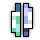
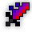
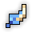

BiS Items & Swapouts:
Main Set:
 
Swapouts:

BiS Enchants:
- : Overwhelming Strikes - Relative Wisdom IV - Wisdom Tradeoff IV - Onshoot Wisdom IV
- : Avalon’s Intellect - Wisdom Tradeoff IV - Stat Mod Multiplier IV - Percent Mana Regen IV
- : Relative Wisdom IV - Wisdom Tradeoff IV - Onhit Wisdom IV
-
 : Avalon’s Intellect - Wisdom Tradeoff IV - Percent Mana Regen IV - Onhit/Onability Wisdom IV
: Avalon’s Intellect - Wisdom Tradeoff IV - Percent Mana Regen IV - Onhit/Onability Wisdom IV
For Wisdom Tradeoff enchants, avoid getting -attack or -dexterity enchants.